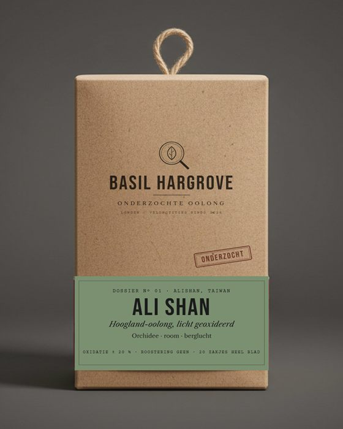
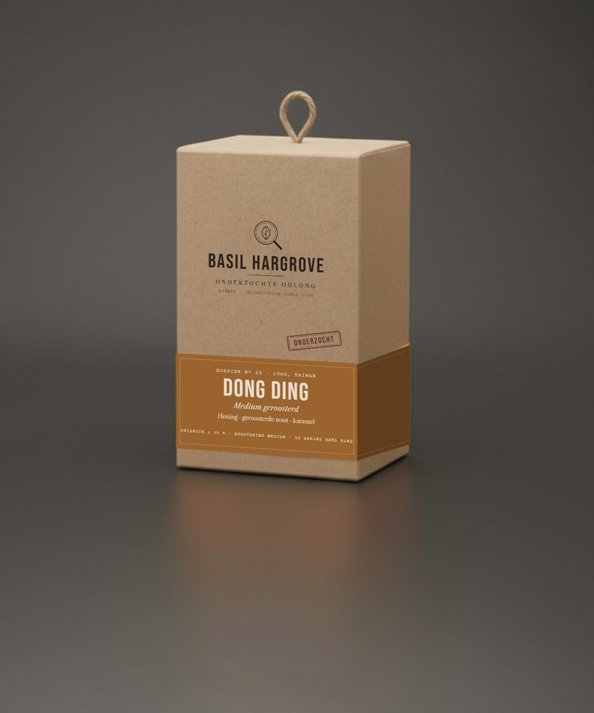
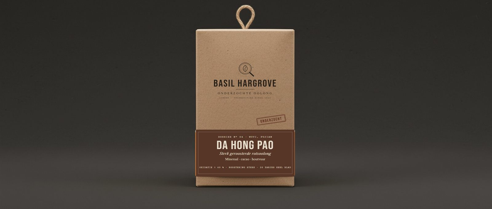
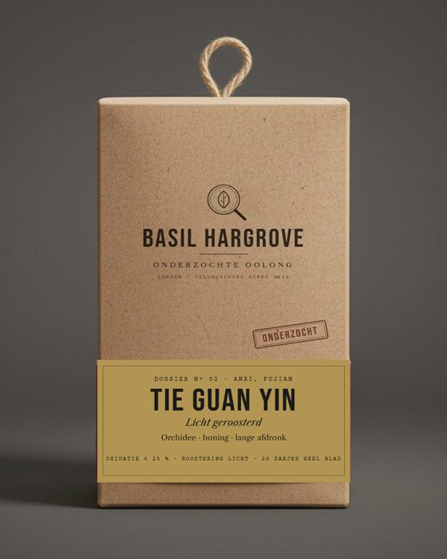
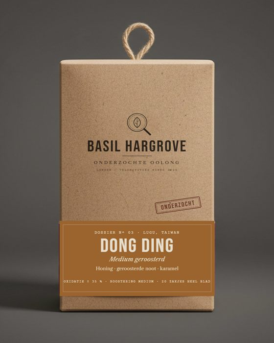
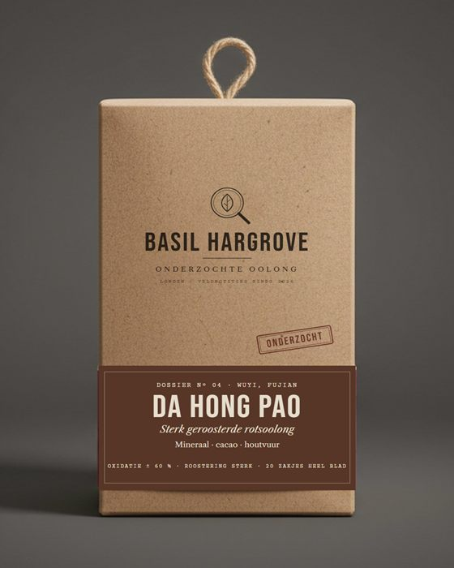
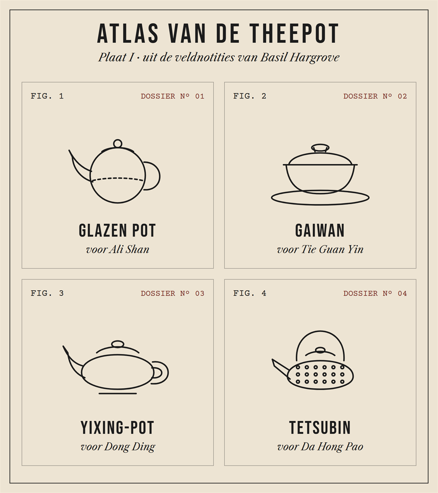
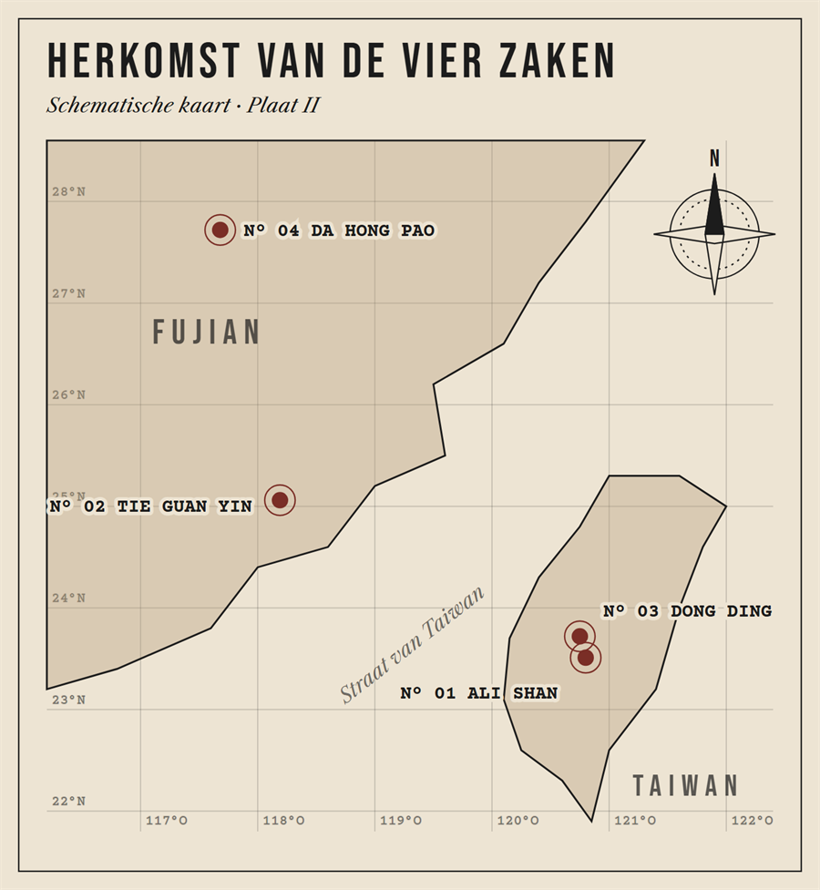

Nº 01

Ali Shan
- Herkomst
- Alishan, Taiwan
- Oxidatie
- ± 20 %
- Roostering
- geen
- Pot
- glazen pot
Orchidee, room en berglucht. Beste in een glazen pot, zodat je het blad ziet openen.
Dossier Nº 00 — het onderzoek begint
Wij onderzoeken oolong tot in het laatste blad.

Basil Hargrove drinkt geen thee. Hij onderzoekt ze.
Vanuit een kleine studeerkamer in Londen legt hij elke oolong vast zoals een detective een zaak: herkomst, oxidatie, roostering, en wat er gebeurt bij de vierde infusie. Hij noteert, vergelijkt en proeft opnieuw.
Waarom oolong? Omdat geen enkele thee zoveel verbergt. Tussen groen en zwart ligt een smal gebied waar elke graad oxidatie en elk uur roostering het verhaal verandert. Daar zit het werk. En het plezier.
Oolong geeft zich niet in één kop prijs. Dat is precies de bedoeling.

Van licht geoxideerd tot diep geroosterd. Elk dossier begint bij de herkomst en eindigt in de kop.
Nº 01

Orchidee, room en berglucht. Beste in een glazen pot, zodat je het blad ziet openen.
Nº 02

Orchidee en honing, met een afdronk die blijft hangen.
Nº 03

Honing, geroosterde noot en een spoor van karamel.
Nº 04

Mineraal, cacao en houtvuur. De zwaarste zaak in het archief.
Een lichte oolong wil je zien openen, een geroosterde wil klei die onthoudt. Basil Hargrove tekende voor elk dossier de pot die erbij hoort, en zette de herkomst op de kaart.


Eén keer per maand een veldnotitie over één oolong. Geen aanbiedingen, geen haast.
Nieuwsbrief · Dossier Nº 00
We gebruiken je naam en e-mailadres enkel voor de veldnotities. Bevestig je inschrijving via de mail die je ontvangt. Privacyverklaring